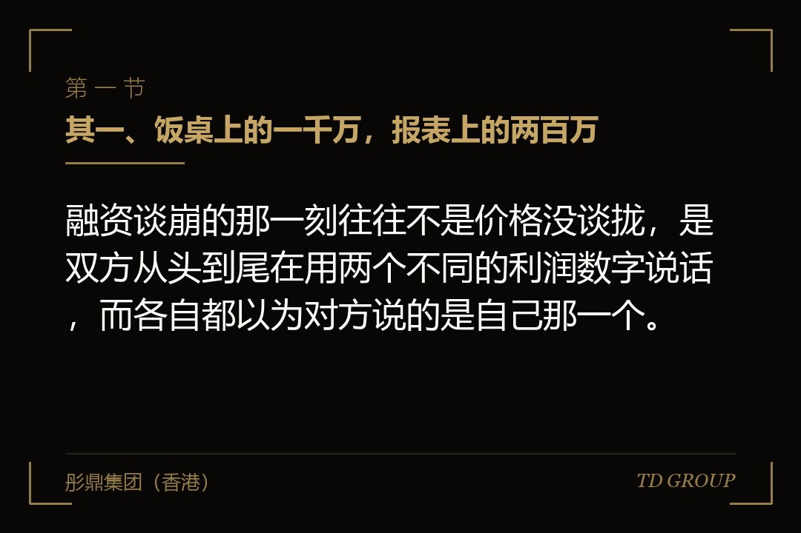
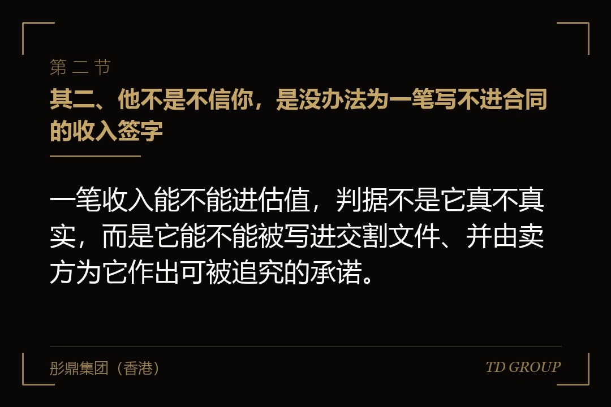
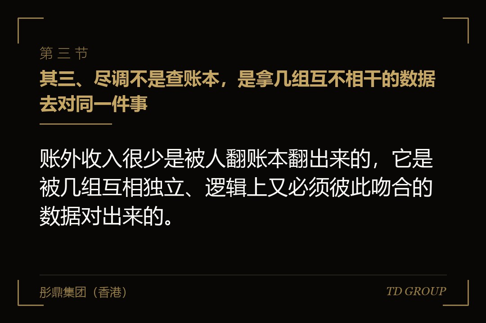

其一、饭桌上的一千万，报表上的两百万

结论先行：融资谈崩的那一刻往往不是价格没谈拢，是双方从头到尾在用两个不同的利润数字说话，而各自都以为对方说的是自己那一个。
假设有家做汽车内饰件的厂子，开了九年，一百来号人，两条注塑线。老板自己算的账很清楚：去年出货六千多万，扣掉料、工、电、租金和管理，落到手里一千万出头。他按这个数去找钱，心里的估值是八千万，让出一成股权换八百万，这在他看来已经算便宜了。
投资人那边看到的是另一份东西。经审计的报表上，去年营业收入四千零几十万，净利润两百一十万。按同行业常见的倍数算下来，整家公司值一千六百万到两千万，一成股权对应一百六十万到两百万。两个数字差了四倍，而这四倍不是谈判空间。
老板的解释很直接：有两千万左右的货是不开票的，客户不要票，价格便宜三个点，钱打到他爱人的卡上。这部分没有走公司账，所以报表上看不见，但钱是实实在在赚了的，工人也是实实在在做出来的。
这句话在民营制造业里出现的频率很高，而它带来的后果被普遍低估。老板以为自己要说服的是一个不相信他的人，实际上投资人多半是信的——投资人只是没有办法为一笔写不进交易文件的收入付钱。
信不信是态度问题，能不能写进文件是结构问题。后者不会因为多坐两顿饭、多聊两次而改变，这是接下来六章要讲的全部内容。
其二、他不是不信你，是没办法为一笔写不进合同的收入签字

结论先行：一笔收入能不能进估值，判据不是它真不真实，而是它能不能被写进交割文件、并由卖方为它作出可被追究的承诺。
股权投资的交易文件里有一组条款叫陈述与保证。卖方要在里面白纸黑字承诺：报表是真实完整的、税款是足额缴纳的、社保是按规定缴的、没有未披露的诉讼与行政处罚。这些不是客套话，它们是后面赔偿条款的触发条件。
接着是赔偿条款。承诺的事项事后被证明不成立，卖方要赔；赔偿范围通常包括被追缴的税款、滞纳金、罚款，以及为处理这件事产生的中介费用。多数交易还会约定一笔托管款，从对价里先扣一部分放进共管账户，过了约定期限没出事才划给卖方。
现在把那两千万账外收入放进这套结构里看。买方要么让卖方承诺税款已足额缴纳，而这句话一签下去就是不成立的，将来被查到，赔偿责任落到卖方个人；要么把这块公开写进文件，那它就变成一笔已知的或有负债，买方会直接从价格里扣，扣的通常不是税款本身，是税款加滞纳金加罚款的上限。
所以投资人真正的处境是：他愿意相信你赚了一千万，但他没有一种办法把这一千万写进他要向出资人交代的那份文件里。机构的钱背后还有出资人，出资人看的是经审计的数字，不是创始人的口述。
这就是为什么这件事上讲情面完全没用。它不是信任问题，是责任归属问题——签字的那个人要为这句话承担后果，而他没办法为一件自己核不了的事承担后果。
其三、尽调不是查账本，是拿几组互不相干的数据去对同一件事

结论先行：账外收入很少是被人翻账本翻出来的，它是被几组互相独立、逻辑上又必须彼此吻合的数据对出来的。
不少老板对尽调的想象是有人来查账。真实的尽调不太查账本——账本是企业自己做的，做得干净是基本功。有效的办法是拿几组不由企业单方面控制的数据，去交叉验证同一件事实。
其一是毛利率与净利率之间的落差。一家企业的毛利率明显高于同行、净利率却明显低于同行，这个组合本身就在提示：要么成本入账有问题，要么收入的一部分没有进来。这是尽调里最容易触发追问的信号之一。
其二是产能与产量。设备的额定产能、用电量、主要原料的采购量、包材的领用量，这几个数推算出来的产量，和报表上的销量对不上，缺口就是没开票的那一部分。用电量尤其难修饰，它由电力公司出账，不归企业管。
其三是人。社保缴纳人数与工资表人数不一致、工资表人数与车间实际到岗人数不一致、社保基数明显低于当地平均水平，这几条同时出现，通常意味着一部分人工成本也在账外，而人工在账外和收入在账外，往往是同一套动作的两头。
其四是钱本身。企业主个人及其近亲属的银行账户在尽调里是要看的，理由不是好奇，是要确认有没有资金在体内体外循环。客户把货款打到个人卡上这件事，在流水上是留痕的，而流水由银行出具。
还有一类最朴素的：把企业的物流单据、仓储出入库记录和纳税申报表放在一起看。发了货、没申报，中间那一段是对不上的。这些方法没有一个需要企业配合，这正是它们有效的原因。
其四、这道差额在估值上到底是怎么算的
结论先行：账外那部分收入在估值模型里的权重是零而不是打折，而且它还会反过来把留在账内的那部分利润的定价倍数一起压下去。
回到那家内饰件厂。投资人手上的模型很简单：拿经审计的两百一十万净利润，乘以一个倍数。倍数取多少取决于行业、增长与风险，但被乘的那个数只有一个来源——审计报告，没有第二个入口。
老板通常会问：能不能把没开票的部分做个说明，打个折算进去。答案一般是不能。原因不在于金额算不算得清，在于这笔收入没有可核验的凭据链条，模型一旦接受了不可核验的输入，它对出资人就失去了意义。
更麻烦的是第二重影响。发现账外经营之后，投资人对这家企业的风险判断会整体上调：一家能把三分之一的收入放在账外的企业，其他方面的规范程度大概率也是同一个水平。风险上调直接体现为倍数下调。
所以实际发生的往往是双重打击：分子从一千万掉到两百一十万，乘数也从同行中位水平往下走一档。老板事后复盘会说，早知道不该说实话；但不说，尽调也会对出来，而对出来的性质比主动说明严重得多。
这一段值得停下来算一次。倍数从八倍降到六倍，两百一十万乘以六是一千二百六十万，而老板心里那个数是八千万。这不是还价的余地问题，是两边根本不在同一张表上。
其五、并购比融资更狠：钱到账不等于钱是你的
结论先行：股权融资里这道差额压的是价格，并购里它压的是你最终真正拿到手的那部分对价，而且要等两三年才见分晓。
融资是投资人把钱投进公司，最坏的结果是价格谈不上去，交易做不成。并购是买方把钱付给股东个人，而这笔钱在交割那天通常不会一次付清。
典型安排是这样：一部分在交割日支付，一部分放进共管的托管账户锁定十八到二十四个月，还有一部分挂在业绩条件上分期支付。托管那笔钱的用途，正是用来赔偿交割后浮出来的问题，其中税务是排在前面的一类。
假设有家做金属结构件的企业被同行收购，作价一亿两千万，其中一千八百万进托管。交割十个月后，主管税务机关就该企业前几年的收入申报情况启动核查，补税加滞纳金加罚款合计约一千一百万。按交易文件里的特别赔偿条款，这笔钱从托管账户直接扣走。
卖方股东当时的感受是钱已经收到了又被拿回去。但从文件上看不存在任何争议——他在陈述与保证里签过税款已足额缴纳，这句话不成立，赔偿条款自动触发，买方不需要先去打一场官司。
这类条款还有一个特点：税务事项的赔偿期限通常长于一般事项，因为税款追征本身就有更长的时限。也就是说其他承诺过了两年就落地了，税这一项还挂着。具体年限以适用的税收征管规则与交易文件约定为准。
滞纳金按日计收这一点也值得单独说一句。它不因为行情不好、企业困难而暂停，时间拖得越久，那笔或有负债本身就越大，而它一直挂在卖方个人头上。
其六、搬回账内要两到三年，这是一笔时间账不是决心账
结论先行：把收入合法地搬回账内不是补几张发票就完事，它需要一个连续、可比、经得起交叉验证的报表周期，通常要两到三年。
老板听完前面几章，常见的反应是：那我从今年起全部开票，明年不就干净了。这个想法漏掉了一件事——尽调看的不是某一年的数字，是连续几年的趋势，而突然的跳变本身就是一个信号。
设想报表上会发生什么：去年营收四千万，今年突然变成六千万，成本结构没变、客户没变、产能没变、人也没多招。任何一个做尽调的人看到这条曲线都会问同一句：多出来的两千万从哪来的，去年为什么没有。问到这里，前面那件事就自己浮出来了。
所以正规的做法是把它当成一个过程来排。头一段是把业务流理顺：不开票的订单改成开票，价格重新谈——这一步会真实地损失一部分客户，因为对方要的就是不开票的那个价，这个损失得提前算进预算里。
第二段是把资金流收回公司账户，个人卡收货款这件事停掉，历史上的往来做出说明和清理。第三段是把该补的税补上，包括增值税、企业所得税与相应的滞纳金。这一步的规模往往超出老板的预估，因为滞纳金是按天累积的。
第四段才是让报表跑满两到三个完整年度，让收入、成本、税负、人工与用电这几组数彼此吻合，形成一条能被解释的曲线。走到这里，其三里说的那些交叉验证才会互相印证，而不是互相打架。
这就是为什么这件事必须提前动手。企业决定要融资的时候，通常已经是需要钱的时候，而这条路要走两到三年——临上会、临签约才想起来，时间上根本来不及。
其七、收口：一张今天下午就能填完的表
结论先行：把下面这七个问题的答案写在一张纸上，你就能知道自己离一次经得起尽调的融资还差多远，以及差的到底是钱还是时间。
一，我去年真实的经营利润是多少，经审计的报表利润是多少，这两个数的差额是多少。二，这个差额里有多少是收入没进来、有多少是成本多进来了，这两件事的处理方式完全不同，不能混在一起谈。
三，没开票的那部分销售对应的客户是哪几家，他们能不能接受改成开票，改了之后价格要让多少。四，我个人及家人的账户上，最近三年收过多少笔公司的货款，这些钱有没有回到公司。
五，我的社保缴纳人数、工资表人数和车间实际人数分别是多少，三个数之间差多少。六，如果现在补税，大致规模是多少，我拿不拿得出来。七，我打算什么时候融资，从今天到那一天，够不够跑完两到三年的干净报表。
这七个问题里最难的是第六个，因为它把一个模糊的心理负担变成了一个具体的数字；最关键的是第七个，因为前面六个的答案都还可以改，时间不能。
华尔街彤鼎俱乐部里有位做了十几年并购的会员讲过一句话，大意是：卖方最贵的一课，往往是在钱已经到账之后才开始上的。
本质上，账外的那部分收入不是被谁没收了，是它从来没有取得过被定价的资格。同一笔钱有三种身份：在企业主的账本里是利润，在交易对手的模型里是零，在税务口径上是一笔还没结清的负债。把它从头一种身份换成能被定价的那一种，需要的既不是谈判技巧也不是勇气，是两三年的时间和一份提前排好的时间表。